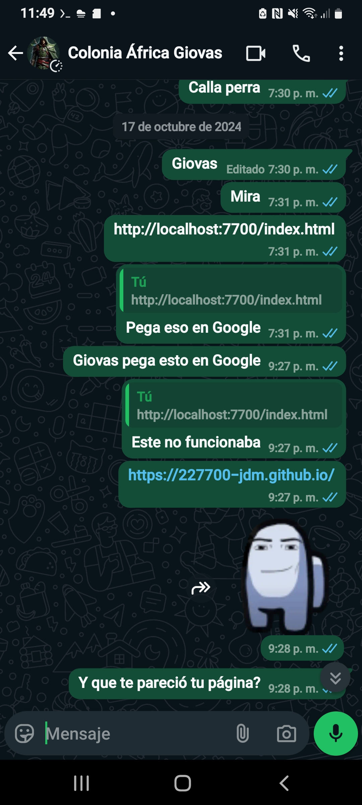
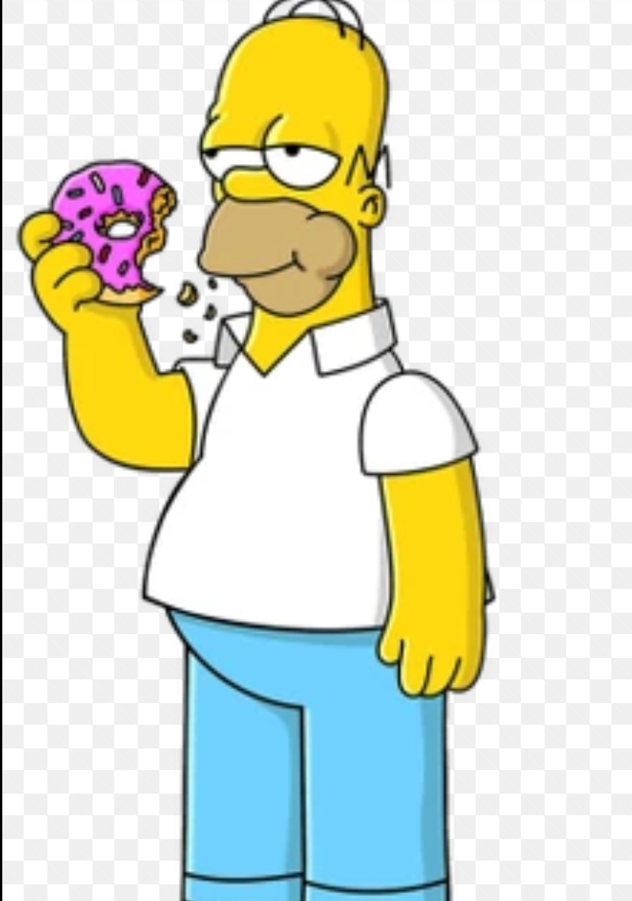
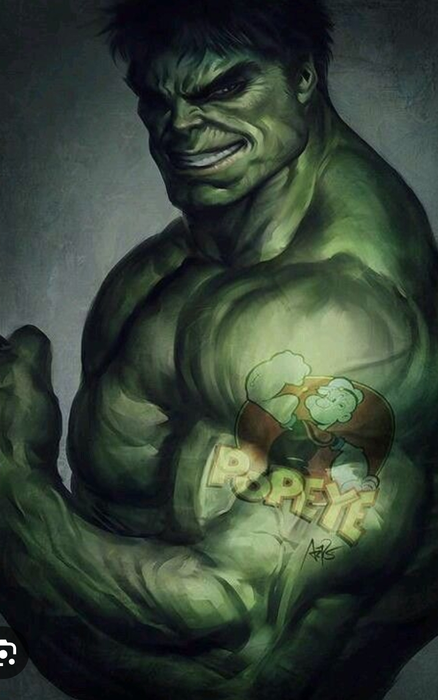
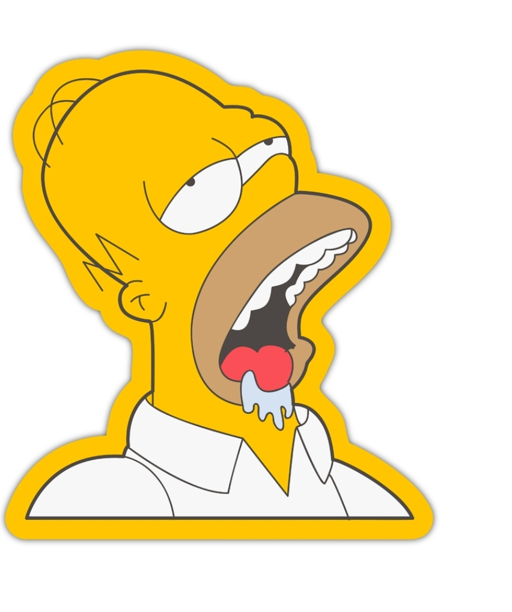
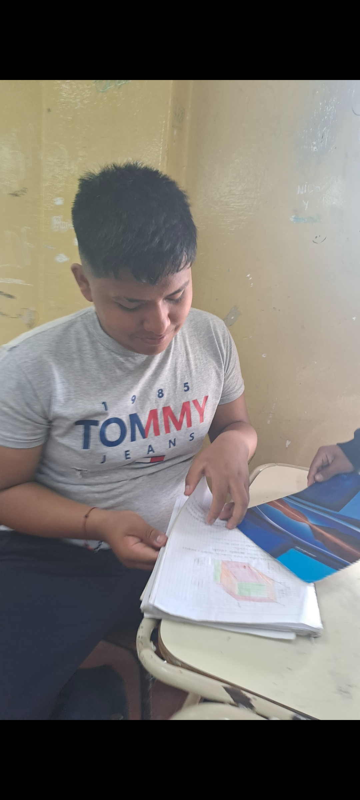

"Hola Giovanni üëãüòä vos sos mi
tarronzito de azucar el mejor
tarronzito de azucarü•µü•µüòç
OTRO POEMA DE JORGE PARA GIOVAS:
GIOVANNI ES COMO LA NOCHE NUNCA SE LE VE POR QUE ES MUY TRAVESTI
Y ESO HACE QUE SE ESCONDA DE LA HUMANIDAD Y EL UNICO QUE LE PUEDE ENCONTRAR ES MIGUEL.

GIOVAS ANTES DEL GYM:
Giovas LUEGO DEL GYM:
GIOVAS EN CLASES:
Presiona aqui para ver la historia de Giovas
GIOVAS ESTUDIANDO:
JORGE LE HIZO ESTE POEMA A GIOVAS:
GIOVAS ERES COMO UNA ALMOHADA POR QUE CUANDO TE DUERMES ERES SUAVE Y ME ENCANTA SALTAR COMO EDGAR CONTRA TIü•µ
POEMA DE JORGE PARA GIOVAS
GIOVAS NO SE DEFINE CON UNA PALABRA. SE DEFINE CON 4 PALABRAS Y ESAS PALABRAS SON EL ODIO, GEY, TRAVA Y ANTIGUEDAD